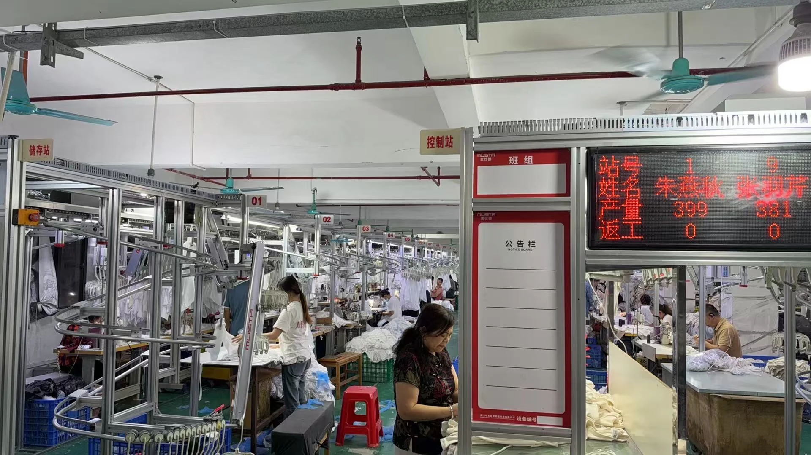
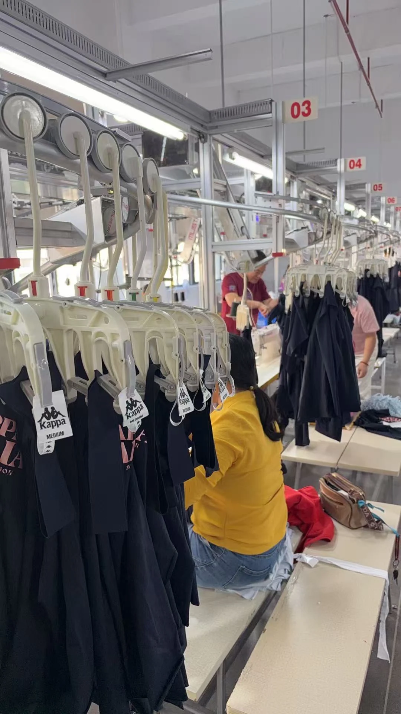

TWO DISTINCT RANGES. ONE MANUFACTURING PARTNER.
XK Apparel and Clothing Company祥康制衣
Apparel development and manufacturing in Guangdong, China.
Choose Kidswear or Active & Casual to explore
the right starting point for your business.
 AI-GENERATED · FICTIONAL MODELS01 / KIDSWEAR
AI-GENERATED · FICTIONAL MODELS01 / KIDSWEARLittle lives.
Big possibilities.
Toddler & children’s apparel. Everyday favourites,
seasonal layers and room to grow.
 AI-GENERATED CAMPAIGN CONCEPT02 / ACTIVE & CASUAL
AI-GENERATED CAMPAIGN CONCEPT02 / ACTIVE & CASUALMade for
movement.
Activewear, casualwear & team uniforms.
Fresh energy for brands, teams and retail.
MEET XK · 祥康制衣
From your first idea.
To your next collection.
XK Apparel and Clothing Company brings together children’s clothing, activewear, casualwear and team uniforms under one manufacturing partnership in Guangdong, China.
We work with brands, importers and retail buyers through OEM and ODM development, material sourcing, sampling and production. Whether you have a complete tech pack or an early collection idea, we help shape the next steps around your brief.
INSIDE OUR PRODUCTION LINE
Automated flow.
Skilled hands.
Our automated overhead garment-handling line connects workstations across the production floor. These company-supplied photographs show the transport rails, numbered stations and line information displays, alongside the team working on the garments.



Actual company-supplied photography, not AI-generated. Automation shown relates to garment handling between staffed workstations. Third-party labels visible in production photographs belong to their owners and do not imply endorsement.